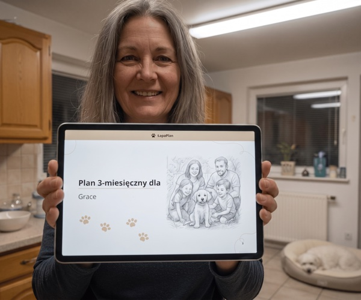
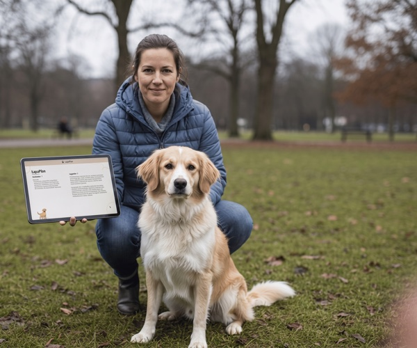

Przez 3 miesiące testowałam każdą metodę szkolenia psów — oto co naprawdę działa
Po latach nieskutecznych porad z filmów na YouTube i poradników myślałam, że próbowałam już wszystkiego. Aż zrozumiałam, że nigdy nie chodziło o metodę — tylko o strukturę, która za nią stoi.
Deszczowy wtorek w marcu. Stoję przed supermarketem, próbując utrzymać zakupy, podczas gdy Luna ciągnie na smyczy jak kucyk zaprzężony do wozu z lodami. Starsza pani patrzy na mnie ze współczuciem. Odpowiadam wymuszonym uśmiechem.
W tamtym momencie miałam już za sobą trzy sesje z trenerem po 150 zł każda, dwa poradniki i kurs online za 280 zł. Nasze spacery stały się codzienną udręką.

Moment, w którym wszystko zaskoczyło
W październiku 2025 trafiłam na ŁapaPlan — sceptycznie, bo próbowałam już wszystkiego. Zaciekawiło mnie jedno: to nie był standardowy PDF. Plan jest dopasowany do konkretnego psa — rasy, wieku, konkretnego problemu, poziomu aktywności.
Pięć minut ankiety. Kilka sekund później plan był w mojej skrzynce. Od razu zwróciłam uwagę na trzy rzeczy:
- Diagnoza przed ćwiczeniami. Dlaczego Luna ciągnęła? Podekscytowanie? Niepewność? Precyzyjnie przeanalizowane.
- Tygodnie budowane etapami. Żadnego przypadkowego zestawu ćwiczeń — rytm ze stopniowo rosnącą złożonością.
- Konkretne przedziały czasowe. „Poniedziałek 10 min, wtorek 15 min" — a nie „poćwicz sobie trochę".
Dzień 1 do 14: co się naprawdę wydarzyło
Jestem sceptyczna, więc prowadziłam dziennik. Dzień 4: Luna zatrzymywała się, gdy ja się zatrzymywałam — drobiazg, ale coś nowego. Dzień 10: napięcie na smyczy wyraźnie mniejsze. Dzień 14: pierwszy spokojny spacer od miesięcy.

Kwestia kosztów
Ile wydałam przez 18 miesięcy bez żadnego efektu: 3 sesje z trenerem (450 zł), dwie książki (70 zł), kurs online (280 zł), różne szelki antyciągnięciowe (170 zł). Łącznie: 970 zł.
ŁapaPlan kosztował od 59 zł jednorazowo. Ułamek tego, co już zainwestowałam — za coś, co naprawdę zadziałało. Szczerze mówiąc, byłam wściekła. Nie na ŁapaPlan, ale na samą siebie.
Moja szczera ocena
Żeby to nie zabrzmiało jak reklama — co podoba mi się mniej: musisz to naprawdę robić. Plan czeka cierpliwie, ale nie wykona treningu za Ciebie. I jeszcze jedno: ciągnięcie na smyczy poprawia się w kilka dni, a głęboko zakorzeniona agresja realnie w 6-8 tygodni.
Jeśli rozpoznajesz siebie w mojej historii — jeśli masz już za sobą trzy czy cztery różne metody — to problem prawie nigdy nie leży w psie. Leży w strukturze.
Chcesz wiedzieć, jak wyglądałby Twój osobisty plan?
Pięć minut. Plan wyląduje potem w Twojej skrzynce.
Zobacz mój plan →Sarah Klein jest niezależną autorką i właścicielką psa w Hanowerze. Doświadczenia bez roszczenia do ogólnej ważności — każdy pies jest inny.